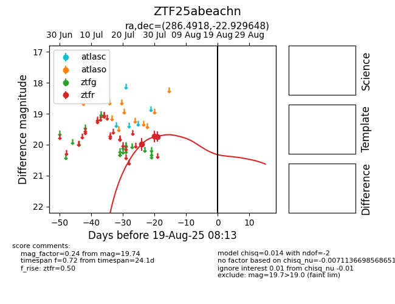

Target ZTF25abeachn at 2025-08-19 09:59, see:
FINK: fink-portal.org/ZTF25abeachn
Lasair: lasair-ztf.lsst.ac.uk/objects/ZTF25abeachn
ALeRCE: alerce.online/object/ZTF25abeachn
alt names
ZTF25abeachn (ztf,fink)
coordinates:
equatorial (ra, dec) = (286.4918,-22.92965)
galactic (l, b) = (13.7287,-13.27233)
photometry
last ztfr=19.74
3 ztfr detections
